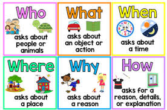
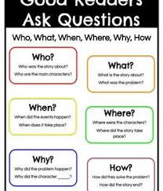
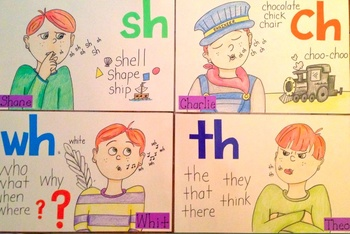
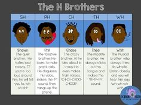
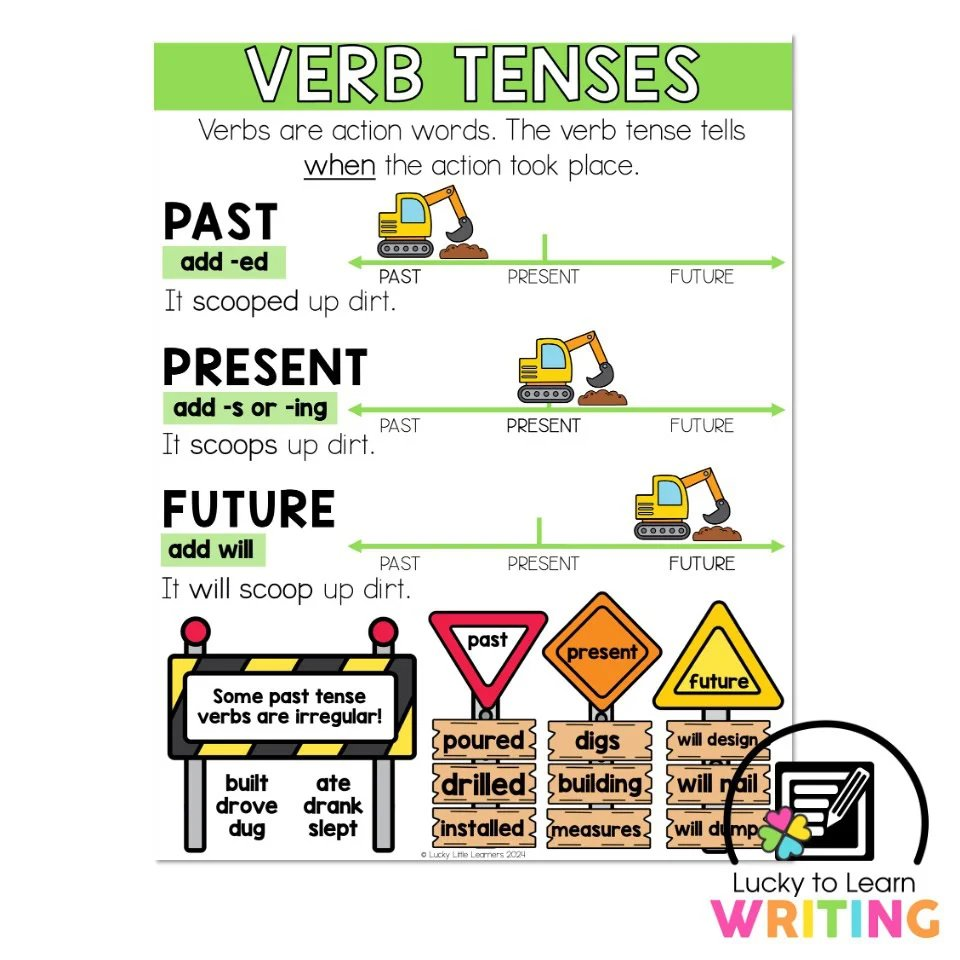
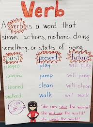

🌍 Week 15 of 35 — Unit 3: Global Goods
Week #: 15 of 35 (Unit 3, week 5 of 5) Dates: Dec 13 – Dec 17, 2026 | Unit: Unit 3: Global Goods | |
Math Curriculum
Unit Padlet
Reading (Comprehension Strategies)
Grammar (Advanced Punctuation and Style)
Practice Websites
Grammar Quest - Daily Oral Language
Maths Quest Pro - Master Your Math Facts!
Extra Math Resources
Unit 1: Math (Place Value and Operations)
Unit 2: Math (Measurement and Data)
Unit 4: Math (Multiplication and Division)
Unit 6: Math (Algebra, FDP, Fractions)
Class | Sunday | Monday | Tuesday | Wednesday | Thursday |
This week's updates / notes: | Last week of Term 1. Qatar National Day is Fri Dec 18 (weekend — no impact on the Sun–Thu school week). Winter Break begins Sun Dec 20 (students return Mon Jan 4). Use the week to consolidate/review as needed. Grey italic text = added in the October 2026 template update (not in the original plan). | No notes for this day. | No notes for this day. | No notes for this day. | No notes for this day. |
Morning Meeting / SEL | Week #8 SEL Lesson - Decide which day you prefer to do this lesson. (REVIEW) THEME: KINDNESS 5A- Individual Activity to Whole Group Meeting 5B- One to One Enrichment 5C- Morning Worksheets | Week #8 SEL Lesson - Decide which day you prefer to do this lesson. (REVIEW) THEME: KINDNESS 5A- Individual Activity to Whole Group Meeting 5B- One to One Enrichment 5C- Morning Worksheets | Week #8 SEL Lesson - Decide which day you prefer to do this lesson. (REVIEW) THEME: KINDNESS 5A- Individual Activity to Whole Group Meeting 5B- One to One Enrichment 5C- Morning Worksheets | Regular morning meeting routine (no specific plan listed for this day). | Regular morning meeting routine (no specific plan listed for this day). |
Literacy: Vocabulary & Spelling Standards | CC L.5.4, L.5.6 · EE.L.5.4, EE.L.5.6 | CC L.5.4, L.5.6, L.5.2.E, RF.5.3 · EE.L.5.4, EE.L.5.6, EE.L.5.2.H, EE.RF.5.3 | CC L.5.4, L.5.6 · EE.L.5.4, EE.L.5.6 | CC L.5.4, L.5.6 · EE.L.5.4, EE.L.5.6 | CC L.5.4, L.5.6, L.5.2.E, RF.5.3 · EE.L.5.4, EE.L.5.6, EE.L.5.2.H, EE.RF.5.3 |
Literacy: Vocabulary & Spelling Activities/Tasks (Differentiation) Routine: give the definition first (no guessing) → students share where they might use it, similar/different words. Morphology, examples/non-examples, synonyms/antonyms & more on the vocabulary cards: Vocabulary Padlet (incl. Spelling: words Mon · test Thu) | G5: abundant — Existing or available in large quantities; plentiful. G3: dominant — Having the most power, influence, or control over others. Unit: acronym — A word formed from the first letters of a group of words. | G5: exclamation — A sudden cry or remark expressing strong emotion or surprise. G3: rival — A person or group competing with another for the same goal. Unit: navigator — A person who directs the course of a ship, aircraft, or other form of transport. Spelling — introduce Week 15 lists (practice all week). Low (Building Spelling Skills, List 15): way, away, today, chain, wait, chase, play, played, rain, paint High (Building Spelling Skills, List 15): early, earth, search, service, wonder, surface, curly, shirt, thirty, doctor, sailor, shower, bakery, another, barber, collar, worse, world | G5: clause — A group of words containing a subject and a verb that forms part of a sentence. G3: dwell — To live in or at a specified place. Unit: cautiously — In a careful way that avoids danger or risk. | G5: comprehensive — Including or dealing with all or nearly all aspects of something; complete. G3: traverse — To travel across or through an area, especially one that is difficult. Unit: derive — To obtain or receive something from a source or origin. | G5: mastery — Comprehensive knowledge or skill in a subject or accomplishment. G3: diverse — Showing a great deal of variety; very different from each other. Unit: interpret — To explain the meaning of something or understand it in a particular way. |
Literacy: Vocabulary & Spelling Assessment (Differentiation) | Quick check: Use today's word in a spoken or written sentence. Low: match the word to a picture or definition. Mid: complete a sentence frame. High: write an original sentence. | Quick check: Use today's word in a spoken or written sentence. Low: match the word to a picture or definition. Mid: complete a sentence frame. High: write an original sentence. | Quick check: Use today's word in a spoken or written sentence. Low: match the word to a picture or definition. Mid: complete a sentence frame. High: write an original sentence. | Quick check: Use today's word in a spoken or written sentence. Low: match the word to a picture or definition. Mid: complete a sentence frame. High: write an original sentence. | Spelling test — Week 15 lists (Low: List 15 · High: List 15). |
Literacy: Reading Standards | CC RF.5.3, RI.5.1 · EE.RF.5.3, EE.RI.5.1 | CC RF.5.3, RI.5.7, W.5.8 · EE.RF.5.3, EE.RI.5.7, EE.W.5.8 | CC RF.5.3, RI.5.7, W.5.8 · EE.RF.5.3, EE.RI.5.7, EE.W.5.8 | CC RL.5.10, RI.5.10 · EE.RL.5.10, EE.RI.5.10 | CC RL.5.10, RI.5.10 · EE.RL.5.10, EE.RI.5.10 |
Literacy: Reading Activities/Tasks (Differentiation) | Guided Reading: YouTube - 5 W's or Question Words Warm-Up (3 min) & Lesson (9 min): Begin with the question: "Where are you in this big wide world?" Home Country. Show a globe or a large world map. Ask, "Can you find our host country?" (UAE). Invite a student to locate the host country. Follow up with, "Who are our neighbors? Which other countries do we have connections with?" Discuss how people, places, and connections make the world smaller. Discuss the 5 W questions: Who lives in the host/home countries? What do we know about these places? Where are they located? When did you or your family travel between these places? Why might someone travel or move between these countries? Model comparing and contrasting using a sentence frame: "The host country is [size/geographic feature], while my home country is [size/geographic feature]." Activity (15 min): Students write a short paragraph comparing the host country and their home country using these questions. Wrap-Up (3 min): Get students share some ideas from their writing.   Rotations: SeeSaw Digraphs · Digraphs 1 · Digraphs 2 IXL: G2- Digraphs (H) · G2- Spell Digraphs · G3-Digraph-H · G3-Trigraph/Digraph   Google Classroom / Worksheets (Folder) · Boom Cards · RazKids, EPIC, Book Bag Phonics: Review the "H" Brothers. Explain each and once they have it, explain that sometimes these sounds can be at the end of words too. Use the document in the resource folder to print and have students sort. Ongoing activities throughout the week for reinforcement. | Guided Reading: (e.g., "The Boy Who Cried Wolf" and "The Ant and the Grasshopper") or Text in the FOLDER Warm-Up (3 min) & Lesson (9 min): Introduction to Researching Skills (15 minutes) Discuss why research is important when learning about different places. Teach strategies for finding credible information; introduce criteria for evaluating credible sources: Author (Who wrote it? Are they an expert?), Publication Date (Is the information current?), Bias (Does the source have a particular opinion or agenda?), Purpose (Is the source informative, persuasive, or entertainment-focused?). Guided Research Practice (30 minutes): Provide a list of recommended kid-friendly resources (print and online). Assign pairs or small groups to research one of: a geographic feature of the host/home country, a cultural tradition unique to one of the countries, or historical connections between the two countries. Wrap-Up (3 min): Reflect on the research process: "What was easy or challenging about finding information?" "How can we make sure our information is trustworthy?" Rotations: See list from Sunday or the differentiation section below. Phonics: Briefly explain that "r" changes the sound of the vowel it follows (e.g., "ar" in "car," "er" in "her"). Show examples on the board. Read words with r-controlled vowels aloud (e.g., "star," "bird," "fork") and have students repeat after you. Sort words by r-controlled vowel sounds (e.g., ar, er, or) and practice pronunciation. Get students to give examples of r-controlled words from their own experience. Extra resources for week: Digraph write the room · Cut out and fold dice, roll and write digraph game · Underline the digraph SeeSaw · Decodable text hub · Word search · Th and wh crossword | Guided Reading: (e.g., "The Boy Who Cried Wolf" and "The Ant and the Grasshopper") or Text in the FOLDER Warm-Up (3 min) & Lesson (9 min): Introduction to Researching Skills (15 minutes) (continued) Discuss why research is important when learning about different places. Teach strategies for finding credible information; introduce criteria for evaluating credible sources. Guided Research Practice (30 minutes): Assign pairs or small groups to research a geographic feature, cultural tradition, or historical connection between the two countries. Wrap-Up (3 min): Reflect on the research process. Rotations: See list from Sunday or the differentiation section below. Phonics: Briefly explain that "r" changes the sound of the vowel it follows. Show examples on the board. Read and sort words with r-controlled vowels (ar, er, or) and practice pronunciation. Extra resources for week: Digraph write the room · Cut out and fold dice, roll and write digraph game · Underline the digraph SeeSaw · Decodable text hub · Word search · Th and wh crossword | Not yet planned. Suggested: Review / catch-up: revisit this week's reading focus with a short guided-reading text; reteach any skill students found hard. | Guided Reading: Review/Catch-up Rotations: See list from Sunday or the differentiation section below. |
Literacy: Reading Assessment (Differentiation) | Informal- SeeSaw Assignment | Informal- SeeSaw Assignment | Exit check: Name one way to check if a source is trustworthy (author, date, bias, purpose). Low: point to a criterion on the chart. Mid: answer with a sentence frame. High: judge one real source and explain why. | Exit check: Short task on today's focus: read and comprehend grade-band literature and informational text. Low: point to or say the answer with picture/word-bank support. Mid: answer with a sentence frame. High: write a short answer using evidence from the text. | Exit check: Short task on today's focus: read and comprehend grade-band literature and informational text. Low: point to or say the answer with picture/word-bank support. Mid: answer with a sentence frame. High: write a short answer using evidence from the text. |
Literacy: Writing / Language Standards (Language Sun & Tue · Writing Mon & Wed · Thu catch-up) | CC L.5.1.C · EE.L.5.1.G | CC W.5.1, W.5.5 · EE.W.5.1, EE.W.5.5 | CC L.5.1.C · EE.L.5.1.K | CC W.5.1, W.5.6, SL.5.4 · EE.W.5.1, EE.W.5.6, EE.SL.5.4 | CC L.5.1.C, W.5.1, W.5.5, W.5.6 · EE.L.5.1.G, EE.L.5.1.K, EE.W.5.1, EE.W.5.5, EE.W.5.6 |
Literacy: Writing / Language Activities/Tasks (Differentiation) IXL this week: Low: Choose between subject and object personal pronouns (G1) High: Choose between subject and object personal pronouns (G3) · Pronoun-verb agreement (G3) Stretch: Use relative pronouns: who and whom (G4) · Compound subjects and objects with personal pronouns (G5) | Grammar (Sun) — Subject & Object Pronouns OBJ: Distinguish subject pronouns from object pronouns Packets — Low (K-1): K: L2.5 Pronouns (review and extend), G1: L3.9 Pronouns I and Me · Mid (2-3): G2: L3.16 Pronouns I and Me, G3: L3.15 Subject and Object Pronouns · High (4-6): G4: L3.13 Subject and Object Pronouns, G5: L1.5 Subject Pronouns, G5: L1.6 Object Pronouns, G6: L1.3 Personal and Intensive Pronouns K-G2: I vs. me distinction. Grammar anchor charts / resources (from the 2025-26 plan): Grammar: Brainpop: Verb Tense   | Writing — Revise for persuasive language and clarity Warm-up Debatable Idea: "Should scientists try to bring back extinct animals?" Reread aloud, check the co-built rubric, strengthen word choice (replace "good" with a stronger persuasive word); partner "2 stars and a wish", then revise. Grammar link: linking words (because, also, however, in addition). TWR: revision-moves menu (pick two): expand one thin sentence with when?/why?; combine two choppy sentences; change one sentence opener — revise with moves, not vibes. Resources: Peer Editing Checklist: Opinion Writing IXL: Linking words (G2) — Best transition (G3) — Stretch: G4 — G5 | Grammar (Tue) — Pronoun Agreement & Advanced Types OBJ: Match pronouns to antecedents; explore pronoun categories (G6) Packets — Low (K-1): K: Review — Common and Proper Nouns, G1: Review — Synonyms/Antonyms/Homophones · Mid (2-3): G2: Review — Pronouns I/Me and Comparative Adjectives, G3: Review — Subject/Object Pronouns and Comparative Adj./Adv. · High (4-6): G4: Review — Subject/Object Pronouns and Comparative Adj./Adv., G5: L1.7 Pronoun Agreement, G6: L1.4 Demonstrative Pronouns, G6: L1.5 Relative Pronouns, G6: L1.6 Indefinite Pronouns, G6: L1.7 Pronoun Shifts Trade uses indefinite pronouns (everyone/some/many) and demonstrative (this product/those imports). | Writing — Edit, publish, present (EXIT TASK) Warm-up Debatable Idea: "Could there be life on an earth-like planet?" Model a final edit against the rubric (capitals, end marks, best-try spelling); students edit and publish a neat copy with optional illustration; each writer presents while classmates give warm "2 stars" feedback. Early finishers begin a second opinion piece. TWR: listener summary sentence — the audience writes "___ believes ___ because ___." Collect as the unit's listening-comprehension exit slip. Resources: co-built rubric (final check) | Catch-up day — reteach or extend this week's grammar and writing; finish unfinished drafts; assign this week's IXL practice (links in the left column: Low = reteach, High = consolidate, Stretch = extension). |
Literacy: Writing / Language Assessment (Differentiation) | Language check: Write 3 to 5 sentences that apply today's rule; use this week's IXL skill. Low: K-1 packet page with teacher support. Mid: Grades 2-3 packet page. High: Grades 4-6 packet page or IXL Stretch. | Writing check: Check today's writing against the co-built rubric (one target from today's lesson). Low: oral rehearsal first, then a sentence frame or labelled picture. Mid: word bank and a partner check. High: independent, plus one stretch goal. | Language check: Write 3 to 5 sentences that apply today's rule; use this week's IXL skill. Low: K-1 packet page with teacher support. Mid: Grades 2-3 packet page. High: Grades 4-6 packet page or IXL Stretch. | Writing check: Score the finished piece against the co-built unit rubric. Low: oral rehearsal first, then a sentence frame or labelled picture. Mid: word bank and a partner check. High: independent, plus one stretch goal. | Catch-up check: Check IXL SmartScores on this week's language skills and conference with 2 to 3 writers on unfinished drafts. |
Math Standards (pacing W14, from the Awsaj Math Curriculum) | STANDARD Assessment / consolidation week: no new small steps in this strand. | PRIORITY Assessment / consolidation week: no new small steps in this strand. | INTERVENTION Assessment / consolidation week: no new small steps in this strand. | ||
Math Activities/Tasks (Differentiation) Pacing W14 · B5 Converting units W12–W16 | STANDARD · ~4 new / wk 4× support block — pick from the panel below Mock checkpoint · four operations & fractions A/B Differentiation: Each lesson includes opportunities for partner practice, common misperceptions, independent practice, and a challenge questions for differentiation. | PRIORITY · ~3 new / wk 4× support block — pick from the panel below Mock checkpoint · four operations & fractions A/B Differentiation: Each lesson includes opportunities for partner practice, common misperceptions, independent practice, and a challenge questions for differentiation. | INTERVENTION · ~2 new / wk 4× support block — pick from the panel below Mock checkpoint · four operations & fractions A/B Differentiation: Each lesson includes opportunities for partner practice, common misperceptions, independent practice, and a challenge questions for differentiation. | ||
Math: Support Block Activities/Tasks (pick one) | Rec/PK4 · Verbal counting beyond 20 · Y1/KG · Estimate on a number line to 50 · Y2/Gr.1 · Divide by 10 · Y3/Gr.2 · Measure capacity and volume in millilitres · Y4/Gr.3 · Order numbers to 10,000 · Y4/Gr.3 · Calculate with money (US: dollars & cents) (review) · Y5/Gr.4 · Multi-step addition and subtraction problems (review) · Y5/Gr.4 · Calculate a fraction of a quantity (pre-teach) · Y5/Gr.4 · Kilograms and kilometres (review) · Y5/Gr.4 · Millimetres and millilitres (review) · Y5/Gr.4 · Convert between metric and imperial units (pre-teach) | ||||
Math Assessment (Differentiation) | Pre-check: Quick pre-check on this week's skills (IXL formative pre-test or 3 questions from the first lesson). | Exit check: 2 to 3 questions from each strand's SHEET or T/F slide at the end of the lesson. Intervention: with the TA sheet and concrete materials. Priority: partner then independent. Standard: independent plus the challenge question. | Exit check: 2 to 3 questions from each strand's SHEET or T/F slide at the end of the lesson. Intervention: with the TA sheet and concrete materials. Priority: partner then independent. Standard: independent plus the challenge question. | Exit check: 2 to 3 questions from each strand's SHEET or T/F slide at the end of the lesson. Intervention: with the TA sheet and concrete materials. Priority: partner then independent. Standard: independent plus the challenge question. | Check: IXL formative assessment on this week's skills. Assessment: Mock checkpoint · four operations & fractions A/B |
Science and/or Social Studies Standards Explore | 7.5.c, 6.5.c | 7.5.c | 7.5.c | 7.5.c | 7.5.c, 6.5.c |
Activities/Tasks (Differentiation) Explore 3-day plan (Mon–Wed) Awsaj Acts of Kindness (Exit Task) — Project/Exit week: the Hook→Review rhythm flexes. IXL this week: Low: Good Citizenship (Gr 1) · High: Good Citizenship (Gr 2) Stretch: Banks (Gr 4) · Costs and Benefits (Gr 5) | Review / catch-up — revisit last week's Explorer learning; finish unfinished investigations or SeeSaw posts; preview this week's topic. | Mon · Plan Plan the Acts of Kindness project: who can we help, and how? (goods drive, thank-you to delivery/cleaning staff, sharing with those in need). Co-plan with the rubric: Acts of Kindness Event Rubric (Padlet · Unit 3 · stable link) Objective: Plan an Acts of Kindness project that applies unit ideas about goods, needs, and fairness to help others. | Tue · Prepare & Make Prepare & make: posters, collection boxes, thank-you cards, sorting the goods. Templates: Poster & thank-you-card templates — ADD PADLET LINK Objective: Prepare materials for the Acts of Kindness project by making posters, collection boxes, or thank-you cards and sorting goods. | Wed · Acts of Kindness (Exit) Acts of Kindness event (Exit Task): carry it out / present it. Reflection + Social Studies Assessment — Global Goods. Objective: Carry out and present the Acts of Kindness project, applying the unit's ideas about goods, trade, and fairness. Exit Task Exit Task — Awsaj Acts of Kindness (public-facing) · done on the LAST WEDNESDAY of the unit Building on the unit’s ideas about goods, needs and fairness, explorers plan and carry out an Acts of Kindness project for the school / community (e.g., a goods drive, a thank-you to workers who bring us goods, or sharing with those in need) and present it. Exit resource: Acts of Kindness Event Rubric (docx). | Review / catch-up — consolidate Mon–Wed learning; complete recordings/reflections; reteach or extend as needed. Celebrate the completed Exit Task. |
Assessment (Differentiation) Explore | Review check: Students explain one thing they remember from the last Explore lesson, using a key word from the unit. Low: point and say with a picture. Mid: sentence frame. High: written explanation. | Assessment: State who the class will help and how, using one idea from the unit (goods, needs, or fairness). Differentiation: choose from two given options with adult support / choose and explain the plan with a sentence starter / propose and justify the plan independently, connecting it to what was learned about goods and fairness | Assessment: Complete one preparation task (poster, box, card, or sorting goods) and explain its purpose for the project. Differentiation: complete a preparation task with an adult modeling the first step / complete a preparation task independently with a checklist / complete a preparation task independently and explain how it helps the Acts of Kindness event | Assessment: Unit 3 Social Studies Assessment — Global Goods (Padlet · Assessments) Assessment: Present the completed Acts of Kindness action and answer one question about why it helps others; complete the Global Goods assessment. Differentiation: present with a sentence frame and adult support / present independently using key unit vocabulary (goods, trade, fair) / present independently and explain how the project connects to what was learned about global goods Assessment: ‘Grade 5 Social Studies Assessment — Global Goods’ (Grade 5 Assessments padlet). | Review check: Students explain one thing they learned in Explore this week, using a key word from the unit. Low: point and say with a picture. Mid: sentence frame. High: written explanation. |